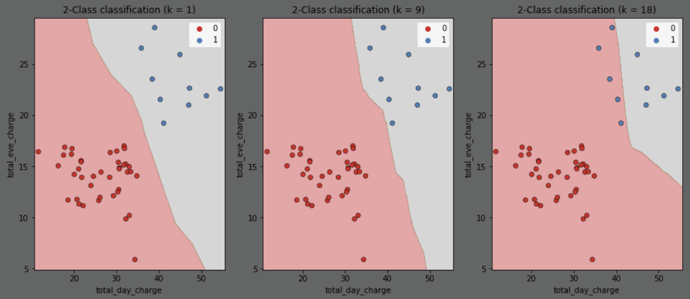

Intro to Classification#
https://campus.datacamp.com/courses/supervised-learning-with-scikit-learn/classification-1?ex=1
k-Nearest Neighbors#
Binary Classification - classification where there are only two outcomes to choose between
k-Nearest Neighbors - predict the label of a data point by looking at the
kclosest labeled data pointsso for
k=5, you find the5closest points to your target point and give it the same label as the majority of thoseyou’d think you’d need an odd number, but they use even numbers in examples too
# import everything
import numpy as np
import pandas as pd
from pathlib import Path
from sklearn.neighbors import KNeighborsClassifier
from sklearn.model_selection import train_test_split
from matplotlib import pyplot as plt
Matplotlib is building the font cache; this may take a moment.
The Churn Dataset#
contains data on customer accounts such as account age
we will try to predict whether a customer will leave (the “churn”) based on this data
note: see Datacamp Notes for instructions on getting DataFrames out of Datacamp
# Read in the churn dataset
churn_df = pd.read_csv(Path().cwd() / "datasets" / "churn.csv", index_col=0)
churn_df
| account_length | total_day_charge | total_eve_charge | total_night_charge | total_intl_charge | customer_service_calls | churn | |
|---|---|---|---|---|---|---|---|
| 0 | 101 | 45.85 | 17.65 | 9.64 | 1.22 | 3 | 1 |
| 1 | 73 | 22.30 | 9.05 | 9.98 | 2.75 | 2 | 0 |
| 2 | 86 | 24.62 | 17.53 | 11.49 | 3.13 | 4 | 0 |
| 3 | 59 | 34.73 | 21.02 | 9.66 | 3.24 | 1 | 0 |
| 4 | 129 | 27.42 | 18.75 | 10.11 | 2.59 | 1 | 0 |
| ... | ... | ... | ... | ... | ... | ... | ... |
| 3328 | 89 | 51.66 | 22.18 | 14.04 | 1.43 | 1 | 1 |
| 3329 | 141 | 43.96 | 18.87 | 14.69 | 3.02 | 0 | 0 |
| 3330 | 111 | 42.47 | 20.60 | 10.43 | 3.13 | 0 | 1 |
| 3331 | 135 | 46.48 | 13.09 | 11.06 | 3.32 | 1 | 0 |
| 3332 | 68 | 27.20 | 15.68 | 9.37 | 1.65 | 1 | 0 |
3333 rows × 7 columns
Choose Data#
features
choose
account_lengthas it might indicate loyaltychoose
customer_service_callsas it might indicate dissatisfaction
target
choose
churnsince that’s what we’re trying to predict
# pull the features and target out of the larger DataFrame
y = churn_df["churn"].values
X = churn_df[["account_length", "customer_service_calls"]].values
# create the unseen data to predict on later (each point has contains an account length and customer service calls)
X_new = np.array([[30.0, 17.5], [107.0, 24.1], [213.0, 10.9]])
print(f"feature shape: {X.shape}, target shape: {y.shape}")
feature shape: (3333, 2), target shape: (3333,)
Fit#
fit the classifier to the data
# Create a KNN classifier with 6 neighbors
knn = KNeighborsClassifier(n_neighbors=6)
# Fit the classifier to the data
knn.fit(X, y)
KNeighborsClassifier(n_neighbors=6)In a Jupyter environment, please rerun this cell to show the HTML representation or trust the notebook.
On GitHub, the HTML representation is unable to render, please try loading this page with nbviewer.org.
Parameters
| n_neighbors | 6 | |
| weights | 'uniform' | |
| algorithm | 'auto' | |
| leaf_size | 30 | |
| p | 2 | |
| metric | 'minkowski' | |
| metric_params | None | |
| n_jobs | None |
Predict#
use the classifier to predict the churn for unseen data
predictions = knn.predict(X_new)
predictions # churn predictions for the 3 X_new data points: [0, 1, 0]
array([0, 1, 0])
Measuring Model Performance (train-test-split)#
accuracy is one performance metric
\(\text{accuracy} = \frac{\text{correct predictions}}{\text{number of observations}}\)
need to measure how well it predicts unseen data - split into
trainingandtestsetstrain it on the
trainingset (typically use70%fortraining)test its accuracy on the (unseen)
testset (typically reserve30%fortesting)
# split the data up into training and test sets, use 70% for training and 30% for testing
X_train, X_test, y_train, y_test = train_test_split(
X,
y,
test_size=0.3, # reserve 30% of the dataset for testing
random_state=21, # set the random seed or it will reserve different data each time
stratify=y, # ensure that the test data has the same proportion of churn vs non-churn as the overall population
)
# fit the classifier and score how well it predicts the test data
knn = KNeighborsClassifier(n_neighbors=6)
knn.fit(X_train, y_train)
knn.score(X_test, y_test) # 0.869 - not amazing
0.857
Model Complexity (Overfitting/Underfitting)#
as you increase the
k(number of neighbors), the model gets less complex (that seems backwards)more neighbors → less complex model → underfitting
less capable of detecting relationships in the dataset
fewer neighbors → more complex model → overfitting
too well fit to the training data to generalize well to test data
vulnerable to fitting to noise
here is the decision boundary predicting target
churnbased on featurestotal_eve_chargeandtotal_day_chargefor a variety ofk(number of neighbors)as
kincreases, the boundary is less affected by individual points (oncek = sample size, every point is just the average of all the other points)starts out too complex/overfitting, eventually plateaus as it becomes too simple/underfitting
- 
{kind=link}
# this time use all of the features to predict the target
X = churn_df.drop("churn", axis=1).values
y = churn_df["churn"].values
# Split into training and test sets
X_train, X_test, y_train, y_test = train_test_split(X,y,test_size=0.2,random_state=42,stratify=y)
# fit and calculate and accuracy for various numbers of neighbors
train_accuracies = {}
test_accuracies = {}
neighbors = np.arange(1, 12)
for neighbor in neighbors:
knn = KNeighborsClassifier(n_neighbors=neighbor)
knn.fit(X_train, y_train)
train_accuracies[neighbor] = knn.score(X_train, y_train)
test_accuracies[neighbor] = knn.score(X_test, y_test)
# figure out the number of neighbors giving the highest test accuracy
best_neighbor = max(test_accuracies, key=test_accuracies.get)
max_test_accuracy = test_accuracies[best_neighbor]
print(f"best accuracy '{max_test_accuracy}' occurs at '{best_neighbor}' neighbors")
# create a plot with the accuracy for each number of neighbors
plt.plot(neighbors, train_accuracies.values(), label="Train Accuracy")
plt.plot(neighbors, test_accuracies.values(), label="Test Accuracy")
plt.plot(best_neighbor, max_test_accuracy, color='purple', marker='o', label="Best Test Accuracy")
plt.axvline(best_neighbor, color='purple', linestyle='--')
plt.title("KNN Accuracy for Varying Number of Neighbors")
plt.xlabel("Number of Neighbors")
plt.ylabel("Accuracy")
plt.legend()
plt.show()
best accuracy '0.8770614692653673' occurs at '7' neighbors